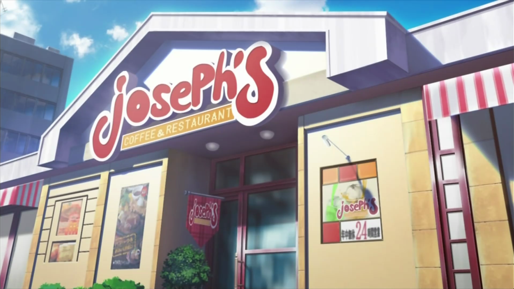

All Posts in Manga&Anime Section

Top 6 Amazing Restaurants in Anime
The Anime world contains a lot of amazing things, including the cuisine culture that isn’t worse than that in the real world. Let’s together explore the top six amazing restaurants in Anime!